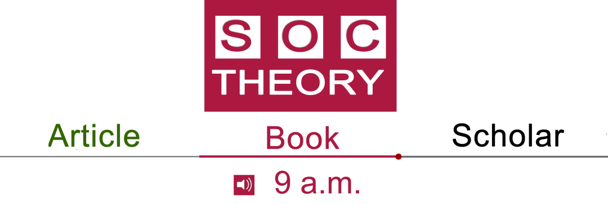
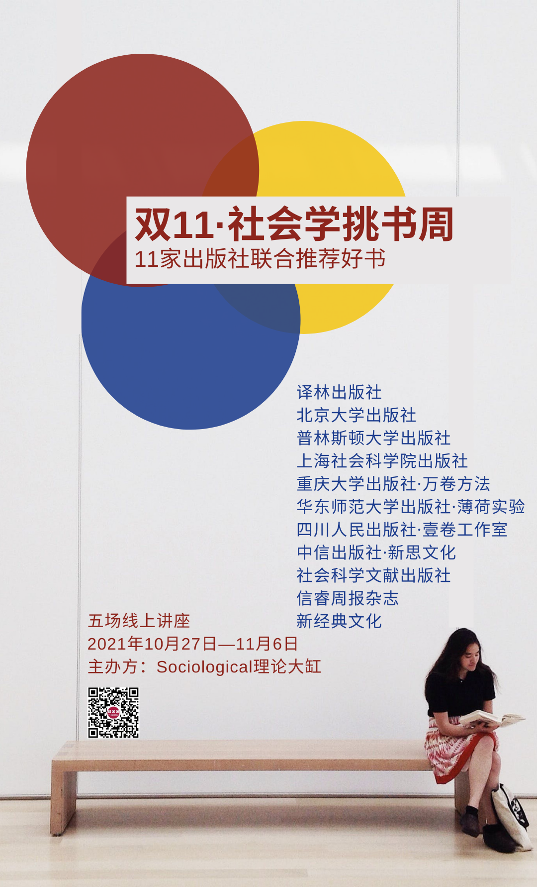
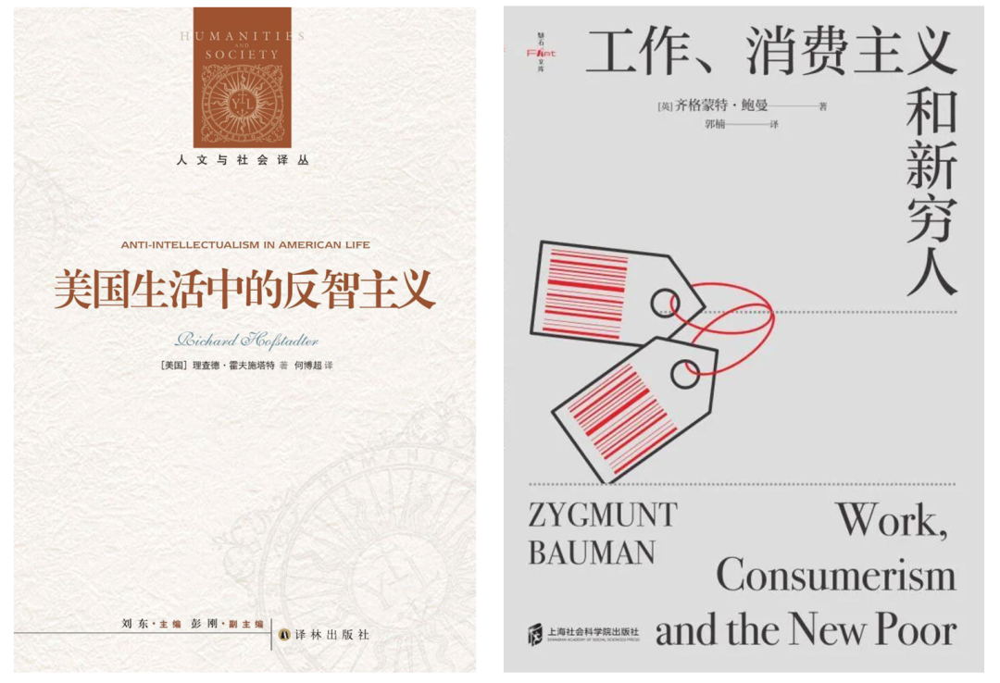
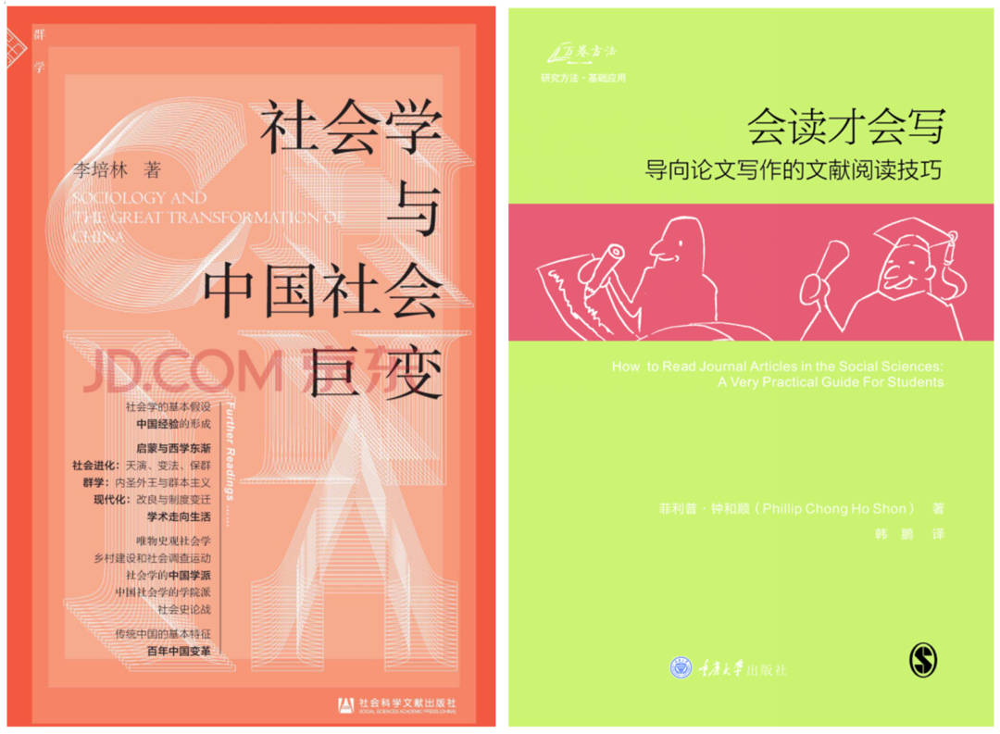
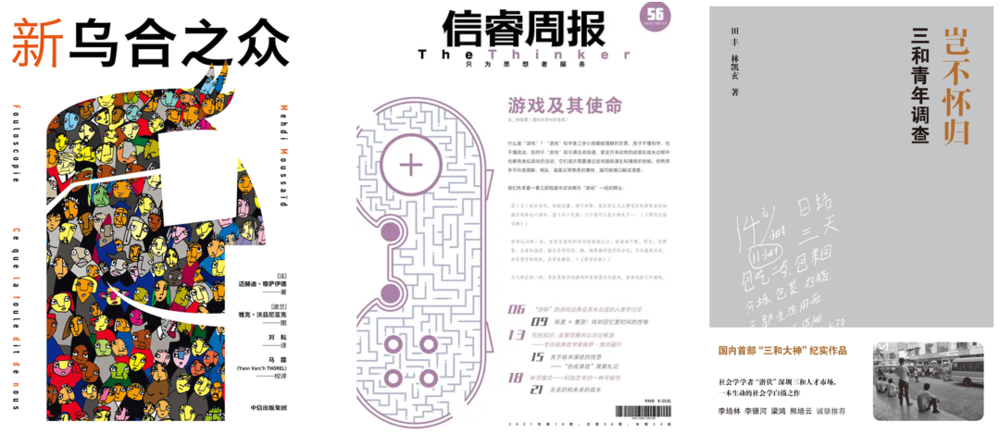
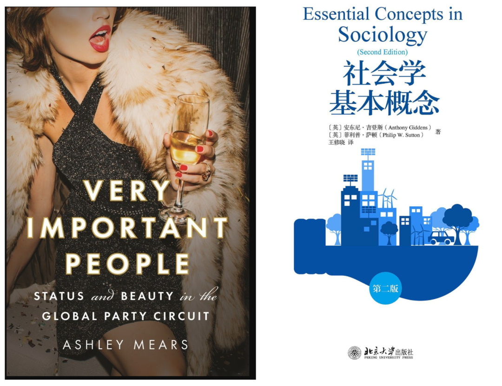
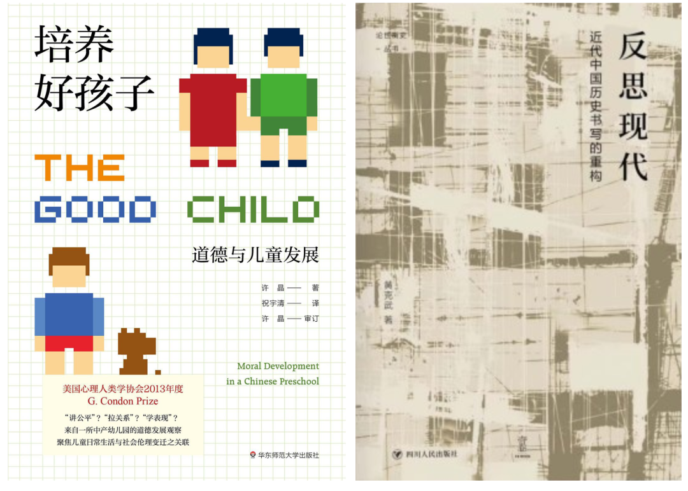

收录于合集

博尔赫斯说过：“如果有天堂，那应该是图书馆的样子。”
我们真的想象过，甚至构筑过这个天堂图书馆。 正如著名的汉译世界名著系列，被誉为“迄今为止，人类已经达到过的精神世界”，所以我们难免会想象自己也拥有一套书，看着这套书脊的橙黄蓝绿等颜色，摆放在一起的时候犹如“彩虹墙”。
但是，如果我们每个人都拥有了自己的天堂图书馆，问题就来了：我们真的读不完！
芝加哥大学社会学教授、著名的社会思想家席尔斯早就发现了这个问题。他还在世的时候，特别得意于自己的私人图书馆，原因并不在于藏书之巨。席尔斯的学生甘阳，这样回忆：“他这个图书馆给人的感觉是这么多书还是能读得完的，不像学校的图书馆，那一排排的书架有时会让人觉得透不过气来的压抑，甚至沮丧。”
席尔斯自己也说：“我二十岁后第一次感到天下书是不可能读完的时候，就曾有过这种很沮丧的感觉。”
确如二人所说，也许我们真的置身于天堂图书馆，永恒的天堂即无垠的时间，反而带来了无尽的沮丧。
别说真的天堂图书馆降临了，就算是现在双11活动要来了，爱书的朋友一方面在享受促销购书、快递收到书、拆开塑封的快感和愉悦，另一方面又知道自己很快又会陷入沮丧：买了这么多书，看着有兴趣就买，结果现在真的读不完，也没力气没心气想去读完了。
真是买书如山倒，读书如抽丝！
好希望我们的天堂图书馆要精瘦一些！
正如席尔斯教授教诲还在读博的甘阳：“你现在看书好像还是我二十岁以前那样，似乎天下书都是看得完的，只要看到好书就都想看。你如果只知道什么书应该读，却不知道什么时候必须控制自己不再读，那会被书埋葬掉。”
我们要想想：
如何在双11活动即将到来之际，不被自己的购书欲望吞噬？
如何给自己的天堂图书馆做减法，而不只是做加法？
微信公众号“ Sociological理论大缸”举办了《双11社会学挑书周》公益活动，邀请了11家出版社（或图书公司、工作室），为热爱读书、喜欢社会学的你，精挑细选最值得下单的社会学书籍！
- 11家出版社编辑老师，来自一线出版经验的精选推荐！
*** 10 月27日—11月6日，五场线上公益讲座！**
- 每场2小时荐书解读，既提升社会学知识，也为自己的钱包省钱！

让更多优秀的社会学作品走进大众
参加本次活动、为你荐书解读的 11 家出版社
译林出版社
北京大学出版社
普林斯顿大学出版社
上海社会科学院出版社
重庆大学出版社·万卷方法
华东师范大学出版社·薄荷实验
四川人民出版社·壹卷工作室
中信出版社·新思文化
社会科学文献出版社
信睿周报杂志
新经典文化
线上讲座场次安排和推荐解读的书籍
见下图
讲座直播均使用腾讯会议
如人满，可至 B 站帐号“社会理论青年说”观看直播
第 1 场： 10 月 27 日（周三） 19—20 ： 30
腾讯会议：883 896097
会议密码：1111
主讲老师：陶泽慧（译林出版社人文社科出版中心主管）
解读推荐：《日常人文课丛书》、《伯林文集》、霍夫施塔特的《美国生活中的反智主义》
主讲老师：应韶荃（上海社会科学院出版社编辑）
解读推荐：鲍曼的《工作、消费主义和新穷人》、阿拉塞维奇的《不平等简史》、斯坦伯格的《谁统治地球：社会规则如何形塑我们的星球和生活》

第 2 场： 10 月 31 日（周日） 19—20 ： 30
腾讯会议：964 160 816
会议密码：1111
主讲老师： 孙瑜（社科文献出版社·群学出版分社编辑）
解读推荐：李培林的《社会学与中国社会巨变》、安超《拉扯大的孩子：民间养育学的文化家谱》、熊欢等的《凡身之造：中国女性健身叙事》、《21世纪的日本家庭：何去何从（第4版）》
主讲老师： 林佳木（重庆大学出版社·万卷方法编辑部主任）
解读推荐：仇立平的《社会研究方法》、钟伦纳的《研究社会的方法：科学在社会生活中的应用》和钟和顺的《会读才会写：导向论文写作的文献阅读技巧》

第 3 场： 11 月 02 日（周二） 19—21 ： 00
腾讯会议：672 591 096
会议密码：1111
主讲老师： 王诗云（中信出版社·新思文化编辑）
解读推荐：迪亚斯的《十种人性：谁在决定我们的善恶选择？》、穆萨伊德的《新乌合之众》
主讲老师： 周天悦（信睿周报杂志编辑）
解读推荐：该杂志第54期《作为研究方法的性别》、第56期《游戏及其使命》和第57期《大脑如何产生思想》
主讲老师： 王宇昕（新经典文化人文社科事业部编辑）
解读推荐：田丰、林凯玄的《岂不怀归：三和青年调查》、田中正人等的《惊呆了!原来这就是社会学》和伊险峰的《张医生与王医生》

第 4 场： 11 月 04 日（周四） 19—20 ： 30
腾讯会议：待公布
会议密码：待公布
主讲老师： 周彦（普林斯顿大学出版社内容策划营销经理）
解读推荐：普林斯顿经济社会学专题、文化社会学专题、普林斯顿学术伴侣系列
主讲老师：周丽锦（北京大学出版社编辑）
解读推荐：戈夫曼的《日常生活中的自我呈现》、伯格的《与社会学同游：人文主义的视角》、吉登斯的《社会学基本概念》以及伯格和卢克曼的《现实的社会建构：知识社会学论纲》

第 5 场： 11 月 06 日（周六） 19—20 ： 30
腾讯会议：待公布
会议密码：待公布
主讲老师： 圆圆（华东师大出版社营销编辑，“薄荷实验”爱好者）
解读推荐：许晶的《培养好孩子：道德与儿童发展》、利恩《成为三文鱼：水产养殖与鱼的驯养》和泽利泽的《金钱的社会意义：私房钱、工资、救济金等货币》
主讲老师：封龙（四川人民出版社·壹卷工作室主任）
解读推荐：黄克武的《反思现代：近代中国历史书写的重构》、唐仕春的《近代中国的乡谊与政治》和贺方婴的《卢梭的面具：<论剧院>与启蒙戏剧》

讲座直播均使用腾讯会议
如人满，可至B站帐号“ 社会理论青年说 ”观看直播
主办方：Sociological理论大缸
感谢本活动的合作推广方！
结绳志
政文观止Poliview
社會學會社
Political理论志
政治经济学新时空